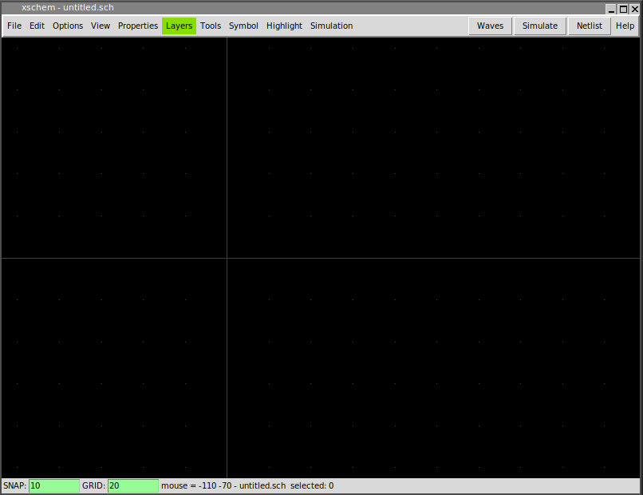
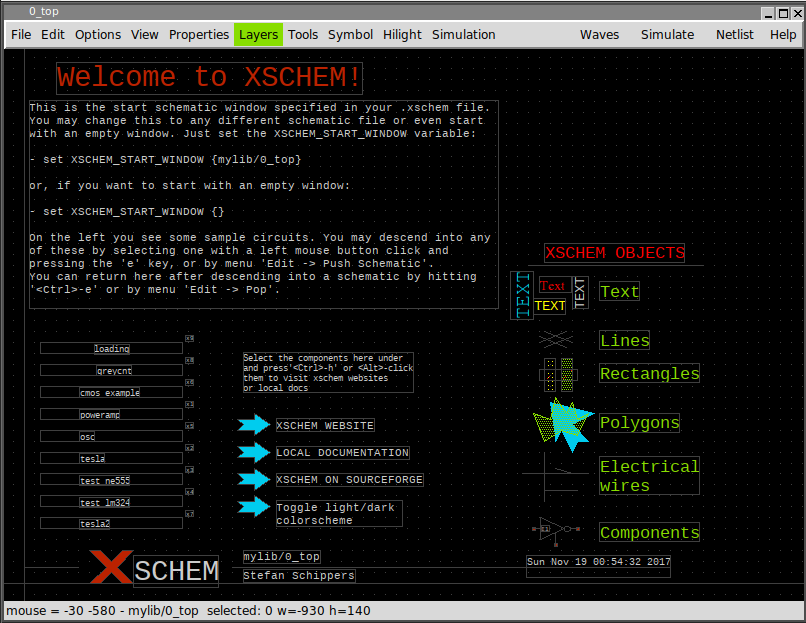

RUN XSCHEM
Assuming xschem is installed in one of the ${PATH} search paths just execute:
user:~$ xschem
the xschem window should appear. If xschem is not in the search path then specify its full pathname.
XSCHEM COMMAND LINE OPTIONS
xschem accepts short (-h) or long (--help) options:
usage: xschem [options] [schematic | symbol ]
Options:
-h --help print this help
-n --netlist do a netlist of the given schematic cell
-v --version print version information and exit.
-V --vhdl set netlist type to VHDL
-S --simulate run a simulation of the current schematc file
(spice/Verilog/VHDL, depending on the netlist
type chosen).
-w --verilog set netlist type to Verilog
-i --no_rcload do not load any xschemrc file
-t --tedax set netlist type to tEDAx
-s --spice set netlist type to SPICE
-3 --a3page set page size for pdf export to A3
-x --no_x dont use X (only command mode)
-z --rainbow use a raibow-looking layer color table
-W --waves show simulation waveforms
-f --flat_netlist set flat netlist (for spice format only)
-r --no_readline start without the tclreadline package ( this is
necessary if stdin and stdout are to be redirected
for example to /dev/null).
-c --color_ps set color postscript
--rcfile file> use <file> as a rc file for startup instead of the
default xschemrc.
-p --postscript export pdf schematic
--png export png schematic
--svg export svg schematic
-q --quit quit after doing things (no interactive mode)
-l <file>
--log <file> set a log file
-d <n>
--debug <n> set debug level: 1, 2, 3,.. C program debug
-1, -2, -3... TCL frontend debug
CREATING A NEW SCHEMATIC
To create a new schematic one possible approach is to delete the whole drawing window and save with a different name (Save As). If you hit <ctrl>a all elements will be selected (select All function).
Use the Delete key to delete all selected objects. Now press the '<ctrl shift>s' key or use the menu 'Save As' function, use the TCL fileselector to go to a XSCHEM library (we will cover libraries more in detail later, XSCHEM libraries are just directories where schematic files (.sch) or symbol files (.sym) are stored). in XSCHEM all design libraries are placed in the locations specified by XSCHEM_DESIGN_PATH defined in the xschemrc file. Choose for example ~/xschem_library/mylib and write test.sch as the schematic name.

Now a new empty schematic file is created. You can use this test.sch for testing while reading the manual. After exiting XSCHEM you can load directly this schematic with the following commands, they are all equivalent.
# xschem defaults its search to the
# XSCHEM_DESIGN_PATH root path
# .sch may be omitted, it is added by default ...
xschem mylib/test
# or ...
xschem mylib/test.sch
# full paths are OK
xschem ${HOME}/xschem_library/mylib/test.sch
you can load test.sch when xschem is running by using the load command '<ctrl>o' key or by menu Open command. Use the file selector dialog to locate the schematic and load it in. When loading a new file XSCHEM asks to save the currently loaded schematic if it has been modified.